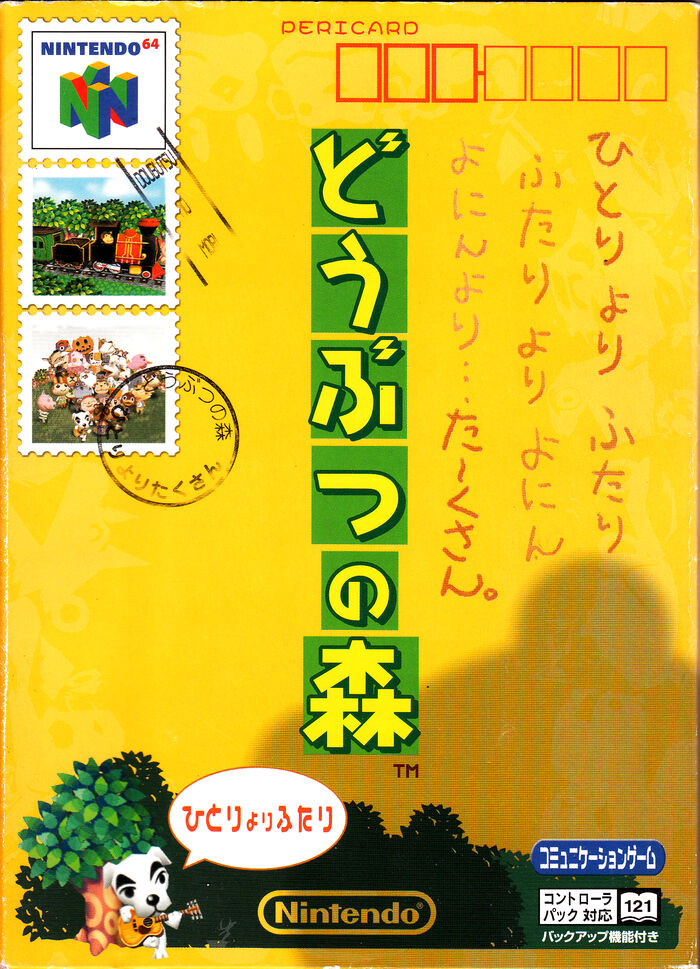

Animal Forest (also called "Dōbutsu no Mori" in Japan) was the first ever released Animal Crossing game that came out. It only was released in Japan on the Nintendo-64 in April of 2001. Nintendo released the game for the japanese market and not accessible for the whole world, because they were unsure if it was profitable enough. Mainly a reason for this was, that the game was very text-heavy and included japanese references not many outside of Japan would understand.
